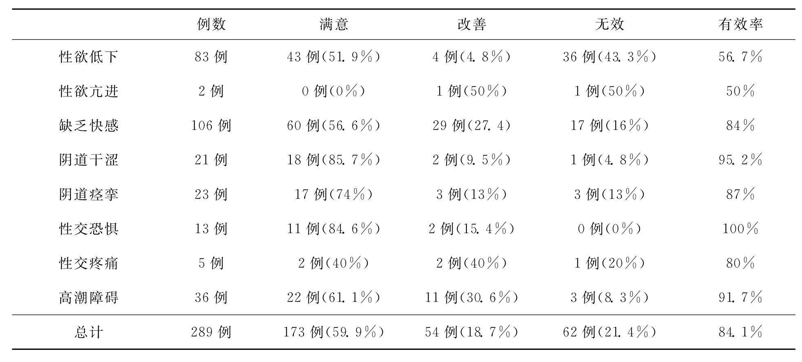

男性患者最常见的问题是怀疑因性交频率较高、手淫或遗精对身体可能造成的伤害，以及中老年男性因雄性激素分泌下降而出现夫妻生活不协调所产生的焦虑。女性患者常见的是经期、妊娠期和经绝期性交的问题。一般妇产科医生都告诫患者不能在经期性交，以免造成生殖道感染而危害身体健康。但这种情况仍可能发生在经期较长或经期出现性欲增强的患者身上，一旦发生经期性交后，有些妇女就会产生紧张情绪并把其后发生的各种不适均归罪于此。性治疗学家认为经期应避免性交，但也并不是性交的绝对禁忌期。只要避开出血较多的头2～3天并使用避孕套就不会带来不良后果。相反，对经期较长的妇女，若强行压抑性欲和拒绝丈夫的性爱，反而有可能损害夫妻关系和导致自身的性欲障碍。
妊娠早期的性生活虽不是禁忌，但丈夫的动作应轻柔，对有习惯性流产史的孕妇应暂停性交。妊娠晚期的性交可采用女上位或后进式。分娩后若产妇恢复正常可在产后6～8周恢复性交。
绝经后的性交不仅正常而且值得鼓励。这一时期的问题主要出现在传统观念的束缚和社会问题，在受封建文化孕育的大男子主义眼中，女性是传宗接代的生育工具，一旦停经结束了生育能力，其性能力也应随之停止。这一观念也被很多老年妇女认同，甚至担心继续保持性行为会被社会或子女看做是老不正经。因此导致了我国近一半老年夫妇分床的现象，急需得到纠正。
婚姻关系是导致性问题最直接的原因之一。一对貌合神离，甚至对配偶的心理或肉体十分厌恶的夫妇，在性生活中必然表现出形形色色的问题。这也是马斯特斯和约翰逊研究所治疗失败的常见原因之一。因此，在开始性治疗前一定要搞清楚该夫妇的婚姻状况，特别是现存的感情基础。若仅是因为缺乏满意的性生活而导致的公开或隐蔽的不满情绪，是可以通过满意的性治疗结果来解决的。如一位36岁的男子，因勃起功能障碍已离婚3次，本次在妻子的督促下来性医学中心就诊，妻子认为丈夫欺骗了她，坦言若不能治疗好就立即离婚。该男子也痛心疾首地表示这次是最后的希望，若不能治愈今后再也不结婚了。经过性感集中训练治疗6周，患者的勃起功能障碍有了明显改善，一个即将破裂的家庭得到了保全，夫妻间的感情问题也随之得到解决。
婚姻中更为常见的问题是夫妇间互不信任的情绪，这在女性患者身上表现得尤为突出。如一位28岁具有大学本科文化程度的女患者单独来院就医，述及一年前患上阴虱，而其丈夫因工作性质经常出入夜总会，故怀疑丈夫有性滥交并将阴虱传给自己。但又苦于无法得到证实，只得将猜疑藏于心中，从此对丈夫的一切社交活动都表示怀疑，性生活更是从回避到拒绝，甚至性交后出现恶心、呕吐，已有半年多无法过性生活。丈夫也因不理解而对妻子产生了猜忌。显然，如果不先解决夫妇间的这种不信任状态，任何性治疗都将是徒劳的。
另一种表现形式是对婚姻的失望，也是引发性问题的常见原因。一个妻子对丈夫最大的期望是责任感，这种责任感表现为对爱情的忠贞，对自己和孩子的关爱以及经济能力和应付各种困难时的安全感。因此，引发对婚姻失望的原因是多方面的。一旦这种失望发展到一定的程度就会敏感地反映到性关系上。妻子通常会用拒绝性关系作为惩罚丈夫的手段。而这种惩罚往往不能解决丈夫存在的根本问题，若超过一定限度将会使丈夫产生敌意，反过来损害婚姻关系。因此，在进行性治疗前应尽可能地消除这种敌意。至于为达离婚目的而蓄意破坏性关系的情况则常见于丈夫方面。有的妻子为挽回婚姻会表现出强烈的求治欲望，而丈夫扮演着虚假的勃起功能障碍，甚至公开要求医生协助，促使其达到离婚的目的，显然，这种情况已超出了单纯性治疗的范围。
缺乏交流是导致男女性功能障碍的常见病因。这和传统文化的影响有十分明显的关系，很多女子从小就受到父母和长辈的教诲，中国传统的“淑女”形象就应是矜持、害羞和对性讳莫言深的。因此很多妻子在性活动中压抑自己，即使没有得到快感或性高潮也从不和丈夫交流。加之性生活又多在黑暗中进行，丈夫难以观察妻子甚至得到错误的信息。一对因妻子“性冷淡”而来就诊的中年夫妇，结婚初期性生活十分和谐，后来丈夫因工作性质养成夜间工作的习惯，10多年来每次性生活都是丈夫将妻子从睡梦中推醒而后做爱。妻子早已厌倦这种影响睡眠的做爱，但却默默忍受以尽妻子的义务，而丈夫却误认为这是妻子乐于接受的方式。直到丈夫对妻子提出更高要求时才发现妻子对做爱早已失去了兴趣。其实只要他们夫妇间就做爱的时间和方式进行坦诚的交流，就可避免妻子10多年的无奈。这仅是传统文化对中国女性束缚的表现之一。
至于西方性学家通过精神分析发现的，因小女孩童年时被“阉割”的潜意识而导致成年后希望他们的丈夫也“阉割”的心理障碍在我国妇女中并不多见。因恋父情结而出现移情现象导致性功能障碍的偶见于知识女性，此类患者必须经过一定的精神分析治疗后才能转入其他治疗。
在我国，实施性治疗经常要遭到传统观念的阻碍，比如对手淫的看法，认为这是”正派”人不应作的下流、变态的行为，这在女性患者中尤为常见。对曾有手淫习惯的男性又常把它看做是造成“肾虚”或性功能障碍的病因。而在我们性治疗中无论是ED、早泄、不射精或各类女性性功能障碍，都离不开对手淫的有关指导和在家庭训练计划中的应用，因此在开始性治疗前必须树立对手淫的正确认识。另外对口交的坚决排斥，以及某些妇女对夫妻双方应平等参与性活动建议的不认同，都是源于传统性观念的阻碍。
要想纠正由传统性观念造成的错误认识并非易事。不过传统性观念的影响在我国40岁以下的青年人中已日趋减少，通过理性的性教育大部都能接受健康的性观念。对于年龄偏大或固执己见的夫妇，不能急于求成，而应循序渐进的分次讨论有关问题，尽力更新他们的观念，并在制订性治疗计划中充分考虑他们所能接受的程度，这也是性治疗必须切合实际并做到个案化的原因之一。以笔者的经验，只要患者夫妇愿意接受以性感集中训练为代表的行为疗法，很多传统的错误性观念都能在治疗进程中得到改变，这些改变将使患者夫妇切身受益。因此，性感集中训练本身就是一种最快捷而有效的性教育方式。
社会因素的影响是性治疗学家在着手拟订治疗计划前必须搞清的问题。性功能障碍本身就是个体和其所在环境之间相互作用的产物。因此社会因素可表现在多方面，如：婆媳关系、工作中的挫折、经济问题、宗教信仰甚至对子女教养的争执等，职业女性因性骚扰而导致的性心理障碍也是社会因素的一种表现。如某女性患者，26岁，容貌姣好，职业为公关文秘。其上司平均每月对其提出1～2次性要求，为了保住高薪职位，患者只得应付。但在长达2年的时间里，每次被迫性交后均感心情压抑，更谈不上获得快感。待交上男友后，虽尽力投入仍无性乐趣可言，并因阴道干涩而经常出现性交疼痛。类似病例在性治疗中心是十分常见的。
按照弗洛伊德理论，潜意识是指个体无法感知到的那一部分心理活功。干扰性治疗的常见潜意识活动，是乱伦恐惧和明显导致精神痛苦的既往事件。如早年受过性暴力侵犯的女孩潜意识中往往存在性厌恶甚至性恐惧情绪，这种患者对爱情和婚姻的向往并无问题，但直接面对性行为时潜意识中的恐惧就会激发出来，在这种情况下患者很难接受性治疗，即使进行了性感集中训练也不可能取得好的疗效。因此在采集病史时要注意有无恋父、恋母、乱伦恐惧等问题的存在，对女性患者尤其要注意是否有早年被性侵犯的经历。
如果发现有潜意识干扰问题的存在，应暂时终止性治疗。而改用心理动力学的心理分析方法对患者潜意识中的问题进行治疗。其方法就是把患者压抑的情绪识别、释放出来，进而引导到理性的意识领域中来。事实上，处理这种对性的潜意识干扰比其他精神疾病中的潜意识问题更为容易，只要患者能重述并面对既往的问题，同时又能得到配偶的理解与支持就可试行性治疗，因为性感集中训练本身就是促进夫妻感情并对患者摆脱潜意识干扰的有力支撑。
人格是指一个人的思维、情绪和行为的特征模式，以及这些模式背后隐藏或外显的心理机制。人格特征在形成过程中受到先天生物因素（占30%～50%）、后天自然和社会环境因素（占50%～70%）以及个人需要和动机因素的综合作用，它可分为正常人格（normal personality）和异常人格（disordered personality）。有人格障碍的患者，往往会表现出自私、任性、自卑、孤僻、易激惹甚至攻击性强等特点，这很可能就是导致夫妻和社会关系紧张的原因，在性治疗中也很难与治疗师进行交流和配合。因此，在初步接触发现患者有异常人格倾向时，可应用自陈量表做人格测验，常用的有明尼苏达多项人格调查表（MMPI）、艾森克人格问卷（EPQ）、卡特尔16项人格因素问卷（16PF）等。对确有明显人格障碍的患者不宜急于进行性治疗，而应建议首先获得精神科医生的帮助，待情况改善后再考虑有无作性治疗的必要。
情绪问题可以发生在性交的前、中、后，因为即使夫妻关系很好也难免会发生口角、争执，其中性交前和性交中的情绪变化对性生活质量影响较大。如果不愉快发生在性生活之前，原则上应中止这次计划中的性生活。现实生活中妻子也常用这种方式来惩戒丈夫，不过这种方式应适度并照顾到配偶的承受度，不能由此造成夫妻关系的长期损害。如某高级职称夫妇，因一点生活琐事争吵，妻子就以拒绝做爱来惩治丈夫，其后逐渐发展到各自找情人分居8年。待双方愿回头重组家庭时，却发现已失去了对性爱的激情和良好的性感受。在接受了长达7个月的婚姻治疗和3个月的性治疗后，这对夫妇才恢复了正常的性生活。另一种情况是一方有激情，而另一方有情绪不愿做爱，勉强的性生活实际上是一种“侵犯”，必使不愿做爱一方产生厌恶甚至敌意，这也是家庭暴力的常见诱因。
发生在性生活中的情绪变化也十分常见。如居住条件差怕性交响动传到室外，或正在性交时父母或孩子来敲门；性生活时突然接到不愉快的电话；因动作粗暴或配偶不愿接受的性交方式（如口交、肛交）所产生的不愉快等。若已在性生活中出现情绪问题，不必勉强继续进行，而在下次性生活时应尽量避免上次发生的不愉快情绪的教训。只有在这些情绪问题累积成某种病理性的条件反射，并以性功能障碍的形式表现出来时才需要性治疗的介入。
性变态是指性唤起、性满足方式及对象异于常人。如恋童症、恋物症、偷窥症等。以恋物症为例，患者嗅到偷来的女人胸罩、内裤时会获得性兴奋和快感，而直接面对女人时却不感兴趣。这种婚前长期形成的性反应模式，必然会抑制其夫妻性生活时的性反应。因此，由性变态导致的性功能障碍不宜作性治疗，而应首先处理性变态。一旦性变态获得纠正，其性功能障碍大多能随之解决。
治疗目标是在开始治疗前必须由性治疗医生和患者达成共识的一个问题。医生应首先倾听患者的意见，防止把自己的观点强加于人。但也要注意患者提出的目标是否错误或不切实际。如一位来就诊的妻子提出，丈夫的阴茎太短小是自己不能满足的主要原因，因此治疗的目标就是希望医生能将丈夫的阴茎加粗加长。经医生检查发现丈夫阴茎完全正常，深入晤谈得知问题在妻子对前夫相对粗暴的性行为的认同，反而对现丈夫温柔的爱抚不适应。经医生耐心的疏导并改进丈夫的性交姿势和性技巧后，患者放弃了原有的治疗目标并取得了很好的疗效。
在制订性治疗计划时，我们强调的是有针对性和可行性。虽然行为疗法的基本程序有一定的规范，但每对求治的夫妇都有其特殊性，因此必须做到个案设计。这不仅针对不同病种，还要考虑到患者的年龄、文化水平、职业、民族、宗教信仰、人格特征、性经验、是否合并有其他身心疾病等因素。
在可行性方面最常遇到的问题是夫妻双方是否能共同参与以性感集中训练为代表的行为治疗，马斯特斯和约翰逊的研究十分重视这一点，甚至认为夫妻共同参与是开展性治疗的前提。但在我国，由于多数女性仍然受到传统观念的影响，在以男性性功能障碍为主的夫妇中，只有约30%的妻子愿意来医院参与行为治疗。所以对多数患者来说，性治疗师即使设计出“理想”的性治疗计划却无可行性。
面对这一国情，笔者通过“适合中国国情的行为疗法临床研究”课题作出了重大修订。对于配偶不愿意来医院参与行为治疗的病例，首先力劝配偶能来医院晤谈一次，这对完善病史和制定治疗计划十分重要，同时可进行必要的心理辅导和性知识教育，同时还可以争取到一部分配偶改变想法，愿意到医院来参与性治疗。若配偶坚决不愿来医院，就建议通过电话晤谈，至少要取得其理解并愿意在家中积极配合患者治疗的承诺。在此基础上，我们针对不同病种设计了单独进行的行为疗法治疗计划，患者可先在医院性治疗室接受除夫妻相互爱抚以外的行为训练。如松弛训练、意念集中训练、自慰技巧训练以及挤捏技巧训练等，并在治疗师指导下观看有针对性的影视教学片，让其初步掌握夫妻间爱抚的技巧，而后按计划回家作有配偶参与的、相互爱抚的家庭训练。在整个家庭训练计划执行期间，患者还需定期接受性治疗师的指导。这和夫妻共同来医院接受由性治疗师直接指导的性治疗相比，显然是事倍功半的无奈之举，但只要家庭训练能按计划坚持完成，仍可取得较好疗效。至于时间方面，由于我们实行以家庭训练为主的改良方案，患者夫妇只需集中来医院2～3次，每次半天（约4小时），这对绝大多数患者而言均不会构成问题。
性治疗通常可分为三个主要阶段，并依次分步进行。
通常包括获得性知识、了解男女间的性差异、患者承认具有操作焦虑、明确对治疗的期望和合理的治疗目标等。其中性知识教育和明确治疗动机及目标最为重要，至于避免患者的性操作焦虑，最有效的办法就是在性治疗初期暂时停止性交，并且不以成功性交作为近期治疗的首要目标。只有达成了这种共识，患者才能抛开对性交不成功（或不理想）的各种顾虑，为进入第二阶段的治疗做好准备。
是为努力实现第一阶段达成的特定性治疗目标。主要包括实践减少造成性焦虑的新行为；应用松弛训练、性幻想训练等增进性唤起；增进双方的性交流以减少对性的误解；以及通过认知疗法改善不良的认知和信念等。换言之，这是行为疗法的操作阶段，要点是鼓励患者夫妻间的语言交流，增进他们之间的理解和信任，只有建立起了巩固的和睦关系，才能进行针对不同性功能障碍的特殊行为训练治疗。
本阶段应是随第二阶段治疗获得初步成效后，随着治疗进程而逐步进行的。在肯定已取得疗效的基础上分析哪些目标已经达到并及时巩固，还存在哪些缺陷和不足并就处理这些问题的策略进行讨论，进而加强相应的治疗措施，以及在完成整个治疗计划后进行总结和评述，也包括对预后的评估。
性感集中训练是一种依据系统脱敏理论设计的行为疗法。它由美国马斯特斯和约翰逊夫妇创建于20世纪60年代，并于1970年在他们出版的《人类性功能障碍》一书中正式发表。该疗法的出现对人类性治疗学起到了划时代的推动作用，也可以说是对前人性治疗技术的总结和发展。他们应用这种技术创造了仅2周的最短疗程和5年随访失败率仅20%的最佳疗效。因此，它一公布就立即受到世界各国性治疗学家的重视和欢迎。虽然性感集中训练还存在着局限性和缺陷，但至今仍然是各国性治疗机构采用的主要治疗手段之一。
性感集中训练是一种性治疗的技术，其适应证主要是心理性性功能障碍。如男性心理性勃起功能障碍、早泄、不射精以及女性性欲障碍、性唤起障碍、高潮障碍、阴道痉挛、性交疼痛、性厌恶等都属于这一范围。然而所谓器质性或心理性性功能障碍在临床上有时是很难截然分开的。因此有的性学家认为，凡有性功能障碍者，都有不同程度的心理问题存在，只是这种心理因素在性功能障碍的发生中是起直接和决定性作用，还是只起次要的诱发作用，或者是性功能障碍发生后继发或伴随出现的问题。因此，性感集中训练在性功能障碍的治疗中有着广泛的适应证，只不过对单纯心理性的性功能障碍起主要治疗作用，而对器质性的则是起辅助治疗的作用而已。
在中国，性感集中训练还有一个十分突出的价值，即对受治疗者性知识和性技巧的显著提高。当前我国性知识的教育水平和普及程度与发达国家相比还存在着很大的差距，连高等医学教育也少有开设性医学教育的课程，即使在其他的性治疗中（如心理分析、药物、外科手术等）也很难得到性行为的具体指导。因此，性感集中训练就成为一种最有效的性知识和技能的教育方式，它不仅能起到治疗的作用，而且还能有效地提高患者夫妇的性生活质量，并且终身受益。从这个观念出发，除外精神疾病患者，性感集中训练几乎没有什么禁忌证。
进行性感集中训练的一个重要原则是让患者夫妇建立一种强化意识，即在治疗中集中精力去体验愉快的性感受，而不是注意性表现的好坏，更不是追求某种难以达到的目的（如高潮的出现）。在患者夫妇开始治疗前必须对这一点有清楚的认识。该疗法所谓的“集中”就是指这种意念的集中，也即抛开为解决某种导致性功能障碍的不良行为而带来的紧张或焦虑情绪，只集中意念去体会渐渐增强的性感受，这将贯穿于整个治疗过程中。性感集中训练的目的仅仅是恢复患者本来具有的、自然的性能力。随着紧张焦虑情绪的克服，各种压抑自然性能力的不良行为也就会随之消失。医院的性感集中训练治疗室，就是创造一个安全的、不受任何干扰的环境，为患者夫妇提供一个学会以更自由、更愉快的方式做爱的机会。他们将在此学会给予和接受各种各样的性刺激，进行相对不受压抑的性行为。
当然，患者在强化意识和集中精力于良好性感受的体验过程中会受到多种因素的阻抗。如女性中常见的对婚姻的失望导致对发生性行为的矛盾心理，并因此产生对性乐趣的阻抗等。特别是性感集中的原则不仅要表现在医院治疗室，而且要带回到家庭作业中，这就需要事前通过心理疏导使患者夫妇达成愿积极治疗的共识，以及具有按照疗程的安排坚持治疗的耐心和信心。
马斯特斯和约翰逊创立的性感集中训练又称两周强化治疗法，必须由夫妇双方共同参与。即患者夫妇到医院来过两周几乎与外界隔绝的封闭生活，集中接受性治疗师的性感集中训练治疗。由于最大限度的排除了外界干扰和整个治疗计划均在性治疗医师的直接指导和控制下进行，这种两周强化疗法的优越性是显而易见的。但是，多数患者夫妇很难达到集中两周时间的要求，因此治疗也可变为在医院接受治疗指导后，回家依据性治疗医师布置的家庭性作业进行自我训练的形式进行。在中国，绝大多数患者都愿意接受这种家庭性作业式的治疗计划。
在治疗的内容上又可分为常规的、典型的四步训练和针对各种不同的性功能障碍病种，专门设计的特殊训练两类。现将基础的四步训练程序介绍如下：
按照广义的性观念———全身皮肤都能接受性刺激的理论，本阶段的目的就是通过夫妇对彼此皮肤的抚摸来获得性乐趣，并以此缓解患者对性刺激的紧张、焦虑情绪。
为松弛紧张情绪，患者可先洗一个热水澡，而后抛开工作、学习和其他一切杂念的干扰，专注地进入训练状态。性感集中训练的房间布置、色调和光线应简洁、柔和，尽量避免视觉上的不良刺激，室内温度以26～28℃为宜，过于寒冷不利性敏感区浅表毛细血管的扩张和情欲的调动。
常用的抚摸方式是妻子俯卧，丈夫以指腹、指背或唇，尽可能轻柔的从颈部开始抚摸，包括耳朵、耳背后、背部，然后经臀、大腿、小腿至足部，继之仰卧，从上肢、胸部、腹部到大小腿。抚摸胸部时应跳过乳房，决不准许接触外生殖器官。而后夫妇交换位置，由妻子按同样程序对丈夫进行除外阴茎和阴囊的抚摸。由谁开始，抚摸的顺序、频率，手法的轻重和抚摸的时间都不是一成不变的，这需要性治疗医师事前和患者夫妇进行充分的讨论而作出安排。其目的是在夫妇双方都能接受的肉体接触水平上开始训练，并逐步增强亲密感和愉快的性体验。本阶段应注意的问题是：
（1）由于我国传统的性生活都是在夜间黑暗中进行，有的女性对在灯光下裸露会感到羞涩和紧张，因而难以进行从容的爱抚。遇此情况可先穿着宽松舒适的衣服和丈夫进行不会引起任何惊恐或反感的亲昵接触，而后除去衣服，彼此注视裸露的胴体，直到紧张情绪消失后才开始抚摸训练。
（2）对于女性患者来说，本阶段训练除了专注地去体会抚摸带来的性乐趣外，还有一个注意体验和开发自身性敏感区的意义。由于传统文化和道德观的约束，众多的中国女性对自身除生殖器官外还存在性敏感区处于无知状态。常见的性敏感区包括唇、耳根、颈部、乳房、下腹部、臀部和大腿内侧等部位。发现和体会这些性敏感区带来的较强性刺激，有利于性唤起的调动和增加抚摸带来的舒适享受。因此，性治疗医生在开始第一阶段训练前应向患者介绍有关知识，并鼓励他们去发现和体验这些生殖器官以外的性敏感区。
（3）由于男性倾向于追求性器官的直接刺激，因此丈夫常有嫌这种抚摸太慢，太间接和不够刺激的情况。对此，性治疗医生要作出耐心的劝解，因为哪怕是隐晦的不耐烦情绪都会影响妻子的情绪。本阶段的目标仅仅是集中在感觉上而不是任何性能力的表现上。正所谓欲速则不达，只有认真耐心地配合训练，通过本阶段的时间才越快。
在第一阶段抚摸的基础上把范围扩大到乳房和生殖器官。本阶段的目的仍是让患者体会性刺激的乐趣而不是把注意力放在实现某种目标上。对妻子而言，首先要鼓励配偶观察、欣赏自己的外生殖器官。丈夫的手指应随着观察进程十分轻柔地从阴阜往下抚摸大阴唇、小阴唇、会阴体，并可试行用洗洁的手指探入阴道口，体验妻子盆底肌肉收缩的感觉。最后向上翻起阴蒂包皮，观察阴蒂头、体，抚摸阴蒂时要十分小心，以免妻子紧张，可由妻子握住丈夫的手指自己施压，教会丈夫抚摸刺激阴蒂的手法和力度。此后妻子也应训练对丈夫生殖器官的抚摸。男子的性敏感区包括臀部、大腿内侧、腹股沟、阴囊和肛门周围等部位。在抚摸阴囊时可轻柔地抚摸睾丸、精索。阴茎的敏感区在腹侧系带、冠状沟和尿道口。在对阴茎抚摸时也应征询丈夫的意见，以丈夫希望的方式和刺激强度来进行。抚摸生殖器，将有利于缓解某些女性患者对阳具插入阴道的“防御性”紧张，以及缓解某些男性患者面对女性外阴时产生的“境遇性焦虑”。总之在生殖器的抚摸中，一定要充分照顾到配偶的意愿和承受力，不要希望一次就能给对方带来令其满意的刺激，而是需要多次训练才能达到默契的配合。
本阶段训练对取得较好的疗效有十分重要的意义，是消除患者紧张焦虑的情绪，和改善性唤起能力的关键步骤。性治疗医生应协助分析能促进或抑制实现治疗目的各种因素，鼓励患者战胜初期的不适应或失望情绪。对于少数在训练中暴露出来的深层次心理问题，应适时地介入心理分析治疗，对已取得的成绩（如ED患者成功的勃起）给予充分的肯定和鼓励，适时的介入和指导是帮助患者完成本阶段训练的关键。
本阶段是在愉快地完成生殖器抚摸后向性交的过渡，即允许阴茎插入阴道，但不要作抽动性交，故又称“阴道包容”。对于男性勃起功能障碍或早泄的患者，主导权应主要控制在妻子身上。初期可采用女上位，由妻子来控制阴茎插入的方式，并通过训练来逐渐增强插入的深度和时间。而后交换体位由丈夫在妻子的指导下插入，但不能抽动，如此反复练习直到患者完全适应插入并能维持足够的时间为止。在此期间丈夫不能急于求成，只有在得到性治疗医生许可的情况下才能转入性交阶段。对于女性性功能障碍患者的性感集中训练治疗，此阶段可尽量缩短或跳过。
即允许抽动和性交的阶段。其要点仍是把注意力放在体验性交的感受上，而不要追求某种期望的目标。当性活动恢复了其自然性后，勃起或高潮会随之到来。在试行性交的过程中，若患者又出现高度紧张，涌现出大量起干扰作用的念头，甚至回避做爱就应立即停止性交训练。性治疗医生应重新对患者存在的心理问题进行评估，必要时可重复第一、二、三阶段的训练。
马斯特斯和约翰逊的原型设计中，夫妻共同参与是基本原则之一。这是因为夫妇中任何一方的性功能障碍都必将累及到另一方，特别是在病程较长的病例中这种情况就更为明显。因此，如果只治疗其中的一方是很难获得满意疗效的。在这个原则的指导下，就得出当夫妇中的一方不愿参与或不配合时，这种治疗就应暂时终止的结论。不过我们在临床实践中发现这并不是绝对的，如前所述，我们可以用患者单独来院参加性感训练而后回家执行有配偶参与的家庭训练计划，也收到了一定的疗效。特别是对女性患者，在进行典型的夫妇共同参与的性感集中训练之前，先进行单独的自我训练反而有着重要的意义。这是因为女性性功能障碍大多数是心理性的，其成因除和男性相似的以外，还带有更浓厚的传统文化和情感因素的影响，同时与女性的性感觉是后天习得的特性有关。很多原发性女性性功能障碍都源自早期性行为过程未能正常渡过，由于受到各种干扰意念或不良刺激的影响，始终未能把阴道插入后所产生的刺激与愉快的心理享受建立起条件反射式的联系，甚至在潜意识里对这种被插入后的刺激产生“自闭”式的阻抗，因此即使面对做爱时的强烈刺激也坚称“没感觉”、“没快感”。而解决此类问题往往需要患者在不受丈夫干扰的情况下，通过单独的性治疗来去除各种干扰因素，重建正常的性交过程。若非如此，让一个性知识缺乏，性反应尚未成熟或已出现某种性功能障碍的妻子和丈夫在一起进行性感集中训练，就难免会出现事倍功半，甚至妻子始终难以跨越某些心理障碍的效果。因此，在她们和丈夫共同训练前，先进行自我训练是十分必要的。
双重性治疗组是指由一男一女两位不同性别的性治疗医生共同组成一个治疗组来对患者夫妇进行治疗。这也是马斯特斯和约翰逊十分强调的保障治疗效果的先决条件之一。由于异性医生很难和患者进行深入的性问题讨论，特别是涉及患者的隐私时，可能会给患者带来紧张和压力。同时医生对异性患者抱怨的性问题和感受，由于自身性别的差异，有时很难准确地理解，甚至会出现判断上的失误。而这种弊端恰可在双重性治疗组中得到解决。一般做法是先由同性别的性治疗医生和夫妇双方的一方单独晤谈，然后由男、女两位性治疗医生各自充当自己晤谈者的“代言人”，进行病情分析和讨论，最后请患者夫妇加入进行四人的“圆桌会议”，进一步讨论有关问题并初步拟订出患者夫妇能够接受的治疗方案。治疗小组将介入整个治疗过程，当发现某一方出现操作焦虑或意念无法集中等影响治疗计划执行的情况时，治疗小组要随时作出分析、判断，并进行适当的心理疏导，而这一工作最好也由同一性别的性治疗医生去完成。
双重性治疗组在性治疗特别是在性感集中训练中的优越性是显而易见的，但单独一位性治疗医生也不是不可以进行类似治疗。特别是在我国，专业的性治疗学家数量有限，很多刚开展性治疗的诊疗机构还不具备可合作的双重性治疗组。在这种情况下，独立进行治疗的性治疗医生应尽量避免偏袒患者夫妇的任何一方，并将这一观念明确地向患者夫妇双方表明。同时对单独进行治疗的性治疗医生本身也提出了较高的要求，最好由资历较深，有相当性治疗经验和能获得患者夫妇双方共同信任的性治疗医生来担任。只要处理得当，仍然可以获得很好的疗效。事实上，目前我国的性治疗机构多数采用的是单个性治疗医生治疗的形式。
性功能障碍患者的治疗动机多种多样，如来自农村的性功能障碍夫妇，其治疗动机往往不是性功能本身，而是为了生育。还有不少陪同患有勃起功能障碍、不射精等症的丈夫前来就诊的妻子，对自身性生活无快感，无性高潮根本不提治疗要求，只是在需要夫妇共同参与的性感集中训练中才表现出来，而妻子的“性冷淡”恰是导致丈夫性功能障碍的主要原因之一。
更有一种伪装的性功能障碍，其目的是通过蓄意破坏性关系来达到破坏婚姻的目的。如一对中年夫妇因ED前来性治疗中心就诊，妻子表现出了强烈的求治欲望。而在单独晤谈时丈夫表示：“我根本没有ED，和妻子在一起不行是装出来的，我已另有心上人。就请医生您下一个ED而且治不好的诊断，我好和妻子尽快离婚”。这种情况显然已超出了性治疗的范围，应建议他们请婚姻治疗学家处理。
此外，有些患者讲的治疗动机前后不一致，甚至自相矛盾。如一28岁结婚二年多的妻子，因丈夫勃起不坚和自己缺乏性高潮而来就诊，初诊时积极敦促丈夫治疗并表示夫妇感情无问题。但经性感集中训练丈夫症状有明显改善后，却单独来院找医生哭述，对过去2年多所受的委屈愤愤不平，认为现在还要辛苦地配合丈夫做家庭训练，即使治好了自己的付出也太大了，倒不如就此分手，去找寻一个女人应得到的幸福，并因此提出不愿再配合治疗。经性治疗医生与之深入晤谈后得知该妻子早已有离婚的动机，但自己不愿公开承认，积极支持丈夫治疗的另一原因是潜意识里希望治不好，找到自己离婚的理由。现看到丈夫疗效显著，这种由潜意识所支配的焦躁情绪终于爆发。所以，有时要搞清患者来治疗的真实动机并不是一件容易的事。
在我国需要性治疗的病例中，约有一半的配偶不愿或不能陪同前来就医。究其原因大致可分为：
（1）婚姻状况十分紧张或已趋破裂，配偶已不再关心患者的性问题。
（2）性功能障碍主要表现在丈夫一方，而妻子因羞涩不愿陪同就诊。
（3）性功能障碍的主要表现在妻子，丈夫认为自己的性功能很好而无视妻子性问题的存在。
（4）配偶因工作问题（在外地工作或经常出差等）无法陪同患者就诊。
其中第一种情况较为复杂。如前所述，当婚姻状况已十分紧张或趋于破裂时，就必然要表现出形形色色的性问题。此时如果某一方想通过解决性问题来挽救婚姻，那显然是犯了因果倒置的错误，遇到这种情况应当先从婚姻治疗入手。至于无视妻子的性问题既可能是夫权思想在作怪，也可能是性无知造成的，性治疗医生可通过单独约见晤谈或通过电话沟通来促使其配合。
婚姻问题对性治疗的影响已在前面多处提到，由于受到“嫁鸡随鸡”、“嫁狗随狗”等传统文化的影响，婚姻问题对中国妇女性问题的影响远大于西方。在农村或经济落后地区，稳定的婚姻关系常可掩盖妇女存在的各种性问题。另一方面，性功能障碍不一定是严重的心理或病理改变造成，也可能仅是严重婚姻冲突造成的后果。马斯特斯和约翰逊创立的性感集中训练基础就是通过行为语言的交流，引发夫妻自然的性反应和建立起密切合作的关系，而要达此目的的前提必须是夫妻间具有信任和精诚合作的精神。如果婚姻关系失调，这种信任和合作必将受到干扰或破坏，性感集中训练也就失去了实施的基础。如一46岁的女患者因“性欲低下”“缺乏高潮”就诊。5年前其丈夫有了外遇，并生了一个女孩，夫妻已分居3年多，现虽有修好的意向，但双方仍存在很深的猜忌，并难以处置私生女。患者首先询问医生的是：“我们这段婚姻究竟该怎么办？”遇到这种情况，医生若未受过婚姻治疗的专门训练，就最好尽早将患者转给婚姻治疗学家，待患者夫妇恢复了合作关系再进行性治疗。
由于我国绝大多数患者都不能接受集中两周的训练，因此家庭训练计划的执行就显得尤为重要。影响家庭计划执行的因素是多方面的，尤其在女性性功能障碍的治疗中，最常见的原因是丈夫重视程度不够，缺乏耐心。这和男性性功能障碍妻子在家庭训练中的耐心配合形成鲜明反差。所以我们强调女性性功能障碍应先从事个人训练的必要性，这样可以缩短第二阶段抚摸生殖器和第三阶段阴道容纳训练的时间，使丈夫比较容易接受家庭训练计划。另一种情况是医生在布置家庭训练计划前未作必要的心理治疗，或计划本身缺乏针对性和合理性，使患者带着问题进行训练或根本就对训练缺乏信心，以致无法完成家庭训练计划。这往往又是医生屈从于患者急于求成的心理而缩短疗程，或因性治疗医生本身缺乏性治疗经验而造成的。所以，家庭训练计划一定要在搞清楚患者存在的心理问题，家庭、社会和经济条件，真实的治疗动机和可行的目标后，才能慎重而有针对性的作出安排。心理问题不能奢望在短期内就能解决，在作完每个阶段的训练后，患者最好能到医院来和性治疗医生一起作出小结并接受对下一阶段训练的指导，性治疗医生可根据具体情况对训练计划进行适当的调整。至少每个阶段的训练情况都要通过电话和医生取得联系并获得指导。当然，还有诸如配偶出差等客观原因影响家庭训练的。因此，在安排家庭训练时应要求患者夫妇作好相应的时间安排，尽量避免社会因素的干扰。一旦治疗中断，不仅影响疗效，还可能打击患者的治疗信心，造成对配偶怨恨等新的心理问题。所以，如果基本条件不具备，就宁可暂缓家庭训练计划，切不可草率行事。
这是一个受到社会和性治疗学家广泛关注的问题。对任何一位患者来讲，愿意和一位异性医生讨论私生活中最隐秘的部分———性生活问题，已充分显示了他/她对这位性治疗医生的信任和“接受”。尤其在男性治疗医生和女患者的接触中，由于约有70%的女性患者和丈夫婚姻或感情上存在或多或少的问题，因此在进行晤谈和性治疗中，女患者很容易让能理解其性问题的男性治疗医生代替丈夫的形象。这将是一种潜在的使患者疏远丈夫的危险倾向，是与通过性感集中训练促使患者夫妇建立亲密关系的初衷背道而驰的，这种移情现象十分有害。在对单个女患者进行性治疗时，要注意患者的移情可表现为一种诱惑。当男医生和女患者就性问题进行亲切讨论时，就可能进入性幻想和相互性吸引的阶段。作为一名性治疗医生必须注意到这种潜在的危险，避免使医患关系人格化。对初次接触性治疗的年轻医生来说，可能会出现激动甚至性唤起，这属正常生理反应。类似情况同样可发生在女性治疗医生为男患者作性治疗的过程中。一旦出现这种情况，性治疗医生就必须严格控制自己的情绪和行为，须知在这种情况下和患者的任何亲昵行为都是极其错误的，是违背道德和法纪的。关于这一点，即使是西方性学界也采取了同样的看法，在我国将会导致更为严重的后果。所以一旦发现患者有移情倾向，性治疗医生就应立即采取反移情措施，如以双重治疗组介入、将患者转给同性别治疗医生或暂时终止治疗。
以笔者的经验，移情既不常见，也不可怕。关键在于早期防范和性治疗医生对患者的正确诱导，必要时性治疗医生可以公开提出和患者讨论移情问题，指出有可能造成移情的原因和其对治疗的危害。所以，只要时刻警惕移情的问题，它并不会构成性治疗中特别严重的障碍。当然，若用同性别的性治疗医生来接诊是防止移情现象最有效的手段。
大多数性功能障碍患者都存在心理问题。如果这种问题是来自于深层次的内心冲突，就不能单靠行为疗法来解决。这种冲突常要追溯到早期甚至童年时期发生的创伤性经历，如乱伦（事实上的或幻想的）和强奸等。也可能来自传统观念地反复灌输或潜意识中的恋父情结带来的负疚感等。对这类患者必须通过耐心的心理分析治疗才能奏效。或者在解决了深层次的内心冲突后再考虑作性感集中训练等治疗。心理分析和行为疗法应该相互协调而不能截然分开，更不是对立的。因此，性治疗学家又必然是心理治疗专家。
性功能障碍也可发生在已知的精神病与人格障碍的患者身上。马斯特斯和约翰逊研究所于1971—1977年间，在接受6个月以上心理治疗的夫妇中发现有8%可诊断为精神性疾病，并在每300名接受行为疗法治疗的患者中发现约有1例会在治疗中发生精神病危象，而需立即接受精神心理治疗。性功能障碍患者合并的常见精神疾病包括：
（1）抑郁症：这是一种性治疗中最常见的情感障碍，可明显损害性欲和性唤起的反应能力。对轻、中度的抑郁症，性治疗仍可谨慎地进行，但对严重，特别是具有悲观厌世甚至自杀倾向的患者，就必须尽早转给精神科医生治疗。
（2）神经症：又称神经官能症，是一种轻型的精神障碍。它包括焦虑性神经症、强迫性神经症、抑郁性神经症、神经衰弱、疑病性神经症和恐怖性神经症等。无意识的内心冲突是神经症的根源，而其核心仍是焦虑。对神经症患者的性治疗和对无精神疾病患者的基本一致，但要困难得多，因为患者对治疗的阻抗和障碍要顽固得多。因此性治疗医生在治疗所需的时间和对疗效的估计上必须有充分的心理准备。
（3）人格障碍：此类患者的内心体验是背离生活常情的，外在行为则是违反社会准则的。所以常给社会和他人造成伤害，同时又给自己带来痛苦。如人际关系紧张、怨天尤人而从不自责，对自己的言行执意的偏袒，缺乏道德观，对旁人猜忌和仇视等。和神经症一样，人格障碍和性功能障碍有着密切的关系，它也给性治疗带来了困难，需要结合精神治疗来进行。因此，应用卡普兰的新性治疗法要比单纯性感集中训练更为理想。不过在通常情况下即使性治疗能改善性功能障碍，却不能改善人格或神经症的症状。所以，精神治疗仍是不可或缺的。
（4）精神分裂症：主要表现为精神活动与现实相脱离，思维、情感和意志行为不协调，相互分裂。其中与性有关的症状十分多见，如钟情妄想、嫉妒妄想、性被害妄想、性色彩幻听等。由于其发病率很高（约占人口的1%），因此不难遇到在发病初期或两次发作之间因性功能障碍而来就诊的精神分裂患者，性治疗医生必须对此有足够的警惕。一旦发现此类患者或疑似者，应首先转精神科医生诊治并听从他们的建议，对精神状况已稳定，患者的性症状不是作为自我防御形式出现的，并预计治疗过程不会威胁其病情恶化的患者，仍可谨慎进行性治疗。治疗时要注意保护患者的防御心理，千万不能威胁或羞辱患者，以免因发怒或畏惧而激发病情，所以此类患者应由经验丰富的性治疗学家来承担治疗。另一需注意的治疗矛盾是精神分裂症患者所用的药物治疗。因为多数抗精神病药物本身就可引起性功能障碍，性治疗医生需和精神科医生协商来调整二者间的矛盾。因此，取得精神科医生的监护和合作是治疗此类患者的明智之举。
性感集中训练从表面看来似乎比较简单，因此常被初学者误解和滥用，结果并未收到想象中的疗效。事实上性感集中训练对性治疗师的要求是比较高的。要想取得好的疗效，首先是自身要具备较强的专业知识基础和控制整个治疗进程、解决各种干扰因素的能力，而后是选择愿积极配合并有一定理解能力的合适病例，并且要向患者夫妇详尽地解释练习步骤和要领，特别是要让伴侣在参与这一训练过程时发挥主动配合的作用，都是取得高疗效的必备条件。当在治疗过程中患者出现干扰意念或不依从现象时，不应轻言放弃，因过早地中止性感集中训练往往会起到加重双方回避性接触的作用。当然，如果经性治疗师的干预和努力后，患者或其伴侣的不依从行为仍然持续在4周以上，就应考虑改换治疗方案和步骤。
因此，性感集中训练的实际操作不仅不简单，相较于药物和手术治疗还更加繁琐费时，这也是导致其推广困难和众多妇科、泌尿科医师无法介入的重要原因。虽然“适合中国国情的行为疗法”已对马斯特斯的治疗原型、就来医院的时间作了重大的简化，但总疗程仍在2—3个月以上。事实上任何一种心理治疗都不可能一蹴而就，不仅患者需具备信心和耐心，性治疗师也必须具备这种坚韧的素质和奉献精神。
由于性感集中训练直接涉及性行为本身，所以在性治疗中一直是比较敏感的话题。由于我国传统文化根深蒂固的影响，健康性知识的传播受到很大的限制。直到1982年吴阶平教授等编译的《性医学》一书出版后，我国现代性医学的研究才有了快速发展，但对性感集中训练这种治疗方式，社会各界甚至包括部分未从事性学研究医生都持怀疑态度。如：这种疗法的实用价值究竟有多大？它是否适合中国国情？患者能接受吗？它会不会对社会秩序构成不安定因素等。总之，即使性感集中训练在性治疗中有着很高的实用价值，但在实际应用中也要考虑到中国国情的具体情况。为此，笔者提出开展此项疗法必须具备的三个基本条件：第一必须是有资质的正规医疗机构才能开展，而且最好能获当地卫生主管部门的批准。第二是必须具备经专门训练的心理学家和性治疗学家来承担治疗医生。由于性感集中训练并不是一套机械的行为程序，而是一种灵活的心理治疗运作方式，加之考虑到性治疗医生可能遇到涉及范围十分广泛的各种问题，所以从事性感集中训练的医生必须具备性生理、性解剖、性心理、性医学、性药学和性社会学、伦理学、婚姻治疗学等广博的知识。实践表明，患者疗效的高低和从事性治疗医生的专业水平和素质修养有着密切的关系。第三是不能搞配偶替代。如前所述，即使西方性学家绝大多数也对替代配偶持否定态度。在我国更是法律和道德所不允许，这是社会关心的焦点之一，所以在我国应绝对予以禁止。
由于性学研究是一门十分严肃的新兴学科，所以有必要提出上述三个条件以便对性感集中训练疗法的研究和推广进行规范和约束，从而保障我国的性治疗学研究得到更加健康、顺利的发展。
树立女人在性活动中获得快感或高潮是靠自己争取而不是靠男人给予的观念，在女性治疗学中有着重要的意义。由于传统“淑女”意识的束缚和对男性特权的认同，大多数中国妇女在性活动中将自己置于一个从属、被动和压抑的地位，这就极大地限制了女性在性活动中的主动性。因此，女性在性活动中究竟应扮演什么样的角色和处于什么样的地位是在女性性知识教育中必须解决的问题。很多性功能障碍的女性患者在性活动中一方面自己不能放松和把注意力集中在体验性刺激的快感上，另一方面又把自己置于一种审视丈夫性能力，甚至是旁观者的地位上，这种不能全身心投入的状态既会造成自身的问题，又往往是导致丈夫性功能障碍的重要原因。所以必须让患者明白在性活动中男女是“平等”的。女性只有积极主动地参与到性活动中才可能获得高质量的性生活。丈夫应尊重、鼓励妻子的这种积极性和权利，要把夫妻间的正当性行为和所谓的淫荡、风骚严格区别开来。从广义的角度来讲，不仅是对性功能障碍患者，更涉及如何让广大的中国妇女从传统的、封建的性观念桎梏中走出来，这也是摆在性学家和社会学家面前的共同课题。
对于女性性功能障碍的治疗，我们首先强调进行自我性感集中训练，在不受丈夫和其他外界因素干扰的情况下可按以下步骤进行：
患者首先可进行温热水浴，仔细清洁会阴和全身皮肤。然后全身裸露地站在大穿衣镜前，仔细欣赏自己的胴体，特别是挺拔的乳房和后翘的臀部所构成的女性曲线，尽量发现自身的美，忽略可能存在的瑕疵，以增强对自身魅力的信心。同时轻轻抚摸乳房、腹部和大腿，自行体会性敏感区的存在。而后来到床上，半坐卧靠在床头并分开两腿，用一面小镜子照看自己的外生殖器。认清阴蒂包皮、阴蒂头，大、小阴唇、尿道口和阴道口。并用中指试行探入阴道口，同时模拟“排尿”和“急停排尿”的动作，以感受阴道耻骨尾骨肌群的收缩，这种收缩训练将提高性交时阴道感觉的敏感性。通过自我欣赏的训练，将大大提高夫妇共同参与的性感集中训练的承受能力。
患者可取一舒适的侧卧体位，手可轻抚会阴，而后闭目遐想可构成愉悦性想象的任何内容。由于性想象具有不受时空和法律道德观念限制的随意性，所以在调动性兴奋方面有时比局部刺激更富有创造性。幻想的内容可以是小说或电影中有关性行为的描述，也可以是自己的异性偶像或梦中情人，这和对丈夫的不忠有着本质的区别。当然也包括假想和自己深爱的丈夫做爱的愉快场景。总之，幻想可使患者完全放松地去自由想象。从而提高自己对性的兴趣和缓解对真实性活动的紧张情绪。
马斯特斯和约翰逊的实验室研究证实手淫与性交引起的基本生理反应没有什么区别，因此对身体和精神是无害的。这里所谓的手淫是指用手指对阴蒂的刺激。对女性而言，阴蒂是女性最敏感的性刺激感受器，因而手淫是女性除性交之外获得性乐趣和性宣泄的主要途径。在美国，有手淫史的已婚妇女可达60%，而在中国尚缺乏确切的大量调查报告，但在来笔者性医学门诊就诊的女性中，大多数无手淫经历是肯定的。训练手淫技巧有助于增强性感觉和体验性高潮，在治疗女性性功能障碍中也发挥重要作用。患者可以先将它当做一种自慰技巧来掌握，而后运用到丈夫参与的训练或实际性活动中。在操作中，医生应指导女性患者如何暴露阴蒂头和鼓励其战胜初期对阴蒂过分敏感的不适应，可使用红霉素眼膏等润滑剂来减轻对阴蒂的过强刺激。需要注意的是包括手淫训练在内的女性自我训练的目的是让患者去体验这种刺激带来的愉快感受，而不是为达到某种预期的目标。因为约有10%的妇女即使通过正规的手淫训练也不会出现性高潮，但这并不影响患者在日后的性活动中得到满意的快感。
如前所述，女性的性感觉迟于性反应，而且是后天获得的。因此在临床上常常见到一种现象：对同一种刺激，有的女性感受强烈，而有的确毫无感觉。这一现象揭示了后者对公认的性刺激和愉快的性感受之间缺乏应有的条件反射联系，所以必须按照学习理论加以训练。关于这一点不少性治疗论著中均有提到，这种自我心理暗示性的训练在女性性功能障碍的治疗中有着重要的地位。如很多女患者可有明显的自慰性高潮，但与丈夫做爱时阴道虽有大量分泌物出现，却仍称“无感觉”。这种灵与肉分离的现象常被称之为“性冷淡”。性治疗医生在对这类患者作心理治疗或性感集中训练时应注重心理暗示效应的训练，即让患者注意体会阴茎对阴道口摩擦和对子宫颈撞击的感觉，并把这种感觉认同为愉快的性刺激，可以结合性幻想尽力使自己兴奋，在集中意念去体验这种刺激的同时，在心理上有意“放大”这些以往并不重视的感觉。如此反复训练，患者将逐步提高对阴道刺激的敏感性，并将这种感受认同为快感。这在原发性性功能失调的治疗中显得尤为重要。
如对阴道痉挛症可作盆底肌群训练，并可在性治疗师的指导下，应用阴道扩张器（一套5具）由小到大地作阴道适应性练习，也可以采用简单的手指插入的训练方法。一般经6～8周的训练后，非器质性原因的阴道痉挛均可得到明显改善。
女性患者通过自我训练基本建立起良好的性反应后，就可将学到的知识和技巧应用到夫妻性生活中去。如有可能，尽量接受夫妻共同参与的性感集中训练，此时将会收到事半而功倍的效果。
性功能障碍不一定是因为夫妻双方或某一方具有严重的心理或生理疾病，而可能仅仅是由于严重的婚姻冲突所造成。造成婚姻冲突的常见原因有：夫妻双方缺乏交流，长期以来的争吵不休，不能满足情感的需求，性生活不和谐，经济方面的分歧，与家庭中其他主要成员的矛盾，婚外恋，有关子女问题的冲突，一方过于好强企图主宰另一方，一方总是疑神疑鬼地怀疑对方等。其中对性生活不满意是十分常见的原因，在一项非专业性的调查中发现，在存在婚姻冲突并需要帮助的夫妇中，有75%的人同时具有性生活方面的问题。
与婚姻纠纷有关的性功能障碍大体可分成三类。第一类患者是因为性功能障碍造成婚姻关系中继发性的不和谐或冲突，性治疗通常是这组患者的治疗选择；第二类患者是曾有过对性功能具有破坏作用的婚姻纠纷的夫妇，这是最为常见的。总的来看进行性治疗是对其恰当的安排，这是因为夫妻的积极感受及要求改善他们性功能的愿望大于他们相互关系中的消极方面；第三类患者是指那些具有严重婚姻纠纷甚至互相敌视的夫妇，他们不能在性功能障碍的短期治疗中进行起码的合作。
对于第一二类患者，在开始性治疗之前，夫妻双方必须满足某些要求：首先，停止争吵和敌意状态数周，这样可使消极成分不再起主导作用；其次，相互视对方为性伴侣，不能回避应有的性接触；第三，要有真心诚意帮助对方和相互促进的愿望。第四，要求丈夫或妻子将自己的性满足要求暂搁置数周，以便为有问题的一方提供更多的性体验机会；第五，积极参与，但又保持一种无性需求的气氛。能够达到前三条要求的夫妇常常很容易达到第四、五条。如果夫妻不能按这些要求合作，性功能障碍的治疗是不可能取得成功的。
至于第三类患者，则应当首先进行婚姻治疗，性治疗必须在婚姻状况改善后才能进行。
绝大多数性功能障碍患者均同时伴有不同程度的焦虑症状，因此处理好患者的性焦虑成为性治疗的重要组成部分。由于我国的性健康启蒙教育十分薄弱，青少年常常对青春发育中所遇到的生理、心理以及行为方面的变化不知所措，从而因各种性困惑导致性焦虑。临床上最常见的诱因是对手淫的依赖和对其可能损害健康的恐惧；其次是对性器官及第二性征发育的敏感和困惑，如男孩常关心阴茎的大小会对性功能和生育能力产生影响，女孩对经期不规律、面部长痤疮等生理现象感到惶恐和烦恼，以及由于性好奇和性饥渴而对异性产生性幻想甚至单相思等，都可能对其生活和学习产生重要影响。这类问题大多可以通过性咨询、性教育得以解决。
成年人的性焦虑主要表现为对自己性能力的怀疑，如过分夸大自己在性活动中的挫折，并由此产生焦虑或抑郁，可在性活动中表现为冷漠或恐惧，甚至在日常生活和工作中表现为脾气暴躁、灰心丧气、疑神疑鬼等。成人的性困难常源自于配偶间对性活动的不同认识和接纳程度上的差异，如对性交频率、性交时间、性交前爱抚及性交方式、性交体位、插入时间的长短、有无性高潮、有无性交后爱抚等性活动的不协调。另一方面由于性生活不和谐导致的感情伤害，又成为加重性焦虑的重要因素。临床上除通过倾听、晤谈等询诊技术加以判断外，常可借助各种焦虑、抑郁量表来协助作出诊断。部分性焦虑及性困难可通过性咨询和心理疏导加以解决，但大多数需作以松弛疗法和系统脱敏疗法为代表的性行为治疗。而渐进式的系统脱敏正是性感集中训练的基础理论，因此，有夫妻共同参与的性感集中训练应是最佳的治疗方式。对于焦虑或抑郁症状较重者，笔者的经验是在开始性治疗前先用抭焦虑或抗抑郁的药物进行短期治疗，待焦虑或抑郁症状有所缓解并停药后再开始性治疗，减少此类药物因镇静而可能减弱性欲的副作用，性治疗能收到事半功倍的效果。
影像制品在性教育及行为疗法中均有广泛应用。其对象包括医科院校的学生、新婚夫妻、育龄夫妻、老年夫妻以及因性功能障碍或婚姻问题而接受治疗的夫妻等。美国20世纪80年代曾出版过七盘性教育录像带作为医科院校性医学教育的辅助教材，其内容虽丰富，但由于许多方面不符合中国国情而未被采用。由北京高教音像出版社发行的“新婚性指南”和“中老年性和谐”等在普及性教育中曾发挥了积极的作用。
在性感集中训练等行为疗法中，指导患者观看有针对性的治疗光盘已是一个重要的辅助手段。因为通过比讲解更为直观的视听示范，患者更易获得相应的性知识和性技巧。1994年由中国性学会有关专家编译的一套性治疗光盘，包括了ED、早泄、女子性功能障碍和性和谐共计4盘，曾得到我国性治疗机构的广泛应用。遗憾的是，我国尚无自行制作的既符合国情又能满足性治疗需求的影像制品，这将是我国性治疗学家今后努力实现的目标之一。需要明确的是，在性治疗中切不可应用三级片等黄色淫秽影像制品，这不仅违反有关法规，更可能对患者产生误导，加重或诱发新的症状和病情，同时对我国方兴未艾的性治疗事业也将产生严重的负面影响，必须严格禁止。
阴茎负压助勃器是一种已使用了半个多世纪的为帮助患者克服勃起功能障碍而设计的性辅助工具。它由一透明的塑料筒、抽气的负压球和有弹性的压缩圈组成。使用时将塑料筒套在阴茎上并紧抵阴茎根部的皮肤，反复挤捏负压球抽出塑料筒中的空气，阴茎便因负压吸引而逐渐充盈勃起，然后将压缩环迅速从塑料筒底端翻下套住阴茎根部以维持阴茎的勃起状态，撤去塑料筒后即可性交，性交结束后去除阴茎根部的压缩环即可。阴茎负压助勃器的缺点在于其充盈阴茎的原理主要是阻止静脉回流，因此其皮温远不及正常勃起，且阴茎根部仍然是疲软的，同样会给性交带来困难。利用相同原理的还有硅胶助勃套，但也因有降低性感觉等弊端而很少有人采用。
当前，在众多男科治疗室可以看到一种电动的负压吸引助勃装置，用于作为治疗勃起功能障碍的手段。由于可在套筒中放入温水及丹参等带色的制剂，患者在感觉和视觉上将优于自用的负压吸引助勃器。当看到自己膨大勃起的阴茎后，对部分怀疑自己无勃起功能的患者而言，有一定的心理暗示作用。但把它夸大为治疗各种ED的妙方，甚至有增长增粗阴茎的功效就纯粹是一种炒作和误导，一旦患者治无效反而会增加心理负担，甚至降低接受其他性治疗的信心。
电动振荡按摩在性治疗中的应用已相当普遍。在男性性治疗中主要用于不射精症的阴茎刺激。对于多数原发性不射精症患者的治疗，重要的是使其能在清醒的状态下体验初次射精的快感，进而建立起正常的射精反射。此类患者诱发射精反射的刺激阈值通常较高，很难通过阴茎在阴道内的摩擦达到。而电动振荡按摩器的刺激强度则由治疗师控制，当看到自己具备射精能力后，对缓解患者的焦虑症状和增强自信心有很好的功效。大多数不射精患者通过电动振荡按摩治疗后都能实现阴道内射精。因此，电动振荡按摩已成为不射精症的主要治疗手段之一。
在女性性治疗中，跳弹或仿真性具之类的振荡器主要用作自慰或性生活时的情趣用品。美国1983年对15000名妇女进行过调查，其中有半数以上的人承认使用过各种型号的振荡器来帮助获得性高潮，但在我国却受到大多数女性的排斥，因此在性活动中很少应用。但近几年以“摩奇”为代表的电动振荡按摩器的出现改变了这种状况。该按摩器的原设计是一种用于美容院作按摩、消除多余脂肪的设备。在为女性作按摩的实践中，意外发现其能诱发女性性高潮，从而引起性治疗学家的兴趣。该按摩器可变频，最高振频可达4000次/分钟，因此无需直接接触阴蒂头，只需振动阴阜或会阴体即可诱发高潮。在临床应用中高潮发生率在90%以上，且对原发性和继发性高潮障碍均有效。这就为部分不善或不愿做手淫训练的患者提供了一种器械辅助的治疗手段。目前这种按摩器（或类似的按摩器）已广泛应用于女性美容院，甚至被作为吸引顾客的一种手段。但如果产生了对这种强烈刺激的依赖，将存在疏远其与配偶做爱兴趣的风险。因此，我们认为对女性性功能障碍的患者而言，仍应到医院接受正规的性治疗，因为即使在美容院获得了性高潮却并不能解决心理上、感情上和与丈夫性生活中出现的诸多问题。但是，由于我国目前开展女性性治疗的机构有限，可以预见在相当长一段时间内，仍会有部分患者求助于女性美容按摩院，如何对其进行规范和管理，尚需进一步探讨。
性治疗的疗效受到多种因素的影响，由于缺乏公认的、科学的规范研究方案，因此不同的学者、不同的研究方法和研究对象其研究结果也就存在很大差异。比较权威的是由英国Hawton主持的由62位性治疗学家参与的对154位性功能障碍患者所做的标准化前瞻性研究，研究对象包括：男性勃起功能障碍34例，早泄14例，不射精5例，性欲低下2例；女性性欲低下57例，阴道痉挛26例，性高潮障碍8例，性交疼痛4例，其他4例。治疗结束时总疗效为：满意42例（27%），基本满意50例（32%），有进步27例（18%），无变化32例（21%），变得更糟3例（2%）。也即成功率（满意和基本满意）为59%，无效率（无变化和变得更糟）为23%。这虽然比马斯特斯报道的成功率要低，但却客观可信。而按病种分类统计成功率，阴道痉挛为81%，勃起功能障碍为68%，早泄为64%，女性性欲低下为56%，性高潮障碍为50%，性交疼痛为50%，不射精为20%。在我国尚缺乏类似Hawton所做的标准化前瞻性研究，笔者应用“适合中国国情的性感集中训练”，在重庆市性治疗中心所取得的近期疗效（隨访1～5年）有效率，男性勃起功能障碍为54/60（90%），早泄为109/120（90.83%），不射精为41/52（78.85%），女性性功能障碍疗效如表：
女性性感集中训练疗效
分病种统计有效率以性交恐惧、阴道干涩、高潮障碍、阴道痉挛为高，性欲亢进、性欲低下疗效较差。本组统计的有效率较Hawton的研究普遍为高，这可能与我国因性知识教育缺乏所致的性功能障碍明显高于西方发达国家有关，其中在女性高潮障碍和男性不射精症的疗效方面表现得尤其突出。5年以上的远期随访疗效在我国尚鲜见报道。为此，胡佩诚等设计的“城市男女性治疗质量问卷”问世后，相信将有助于加强这方面的工作。
从患者的条件来看，影响性治疗效果的因素主要有三方面：婚姻整体状况；性关系总体状况；对性治疗的积极性。性伴侣间婚姻整体状况好的，治疗效果显著强于整体关系差的，而且在评价整体关系时女性的意见和考虑将更为重要。性关系总体状况直接反映出性功能障碍的性质和严重程度，这也和婚姻状况相联系，如治疗前有过分居经历的人治疗效果明显低于从未分居的夫妇。在参加性治疗的积极性方面，特别是在能否坚持执行家庭训练计划时表现出来。为此，争取在4—6周内取得较明显的进步，对鼓励患者坚持执行家庭训练计划和提高治疗效果有重要意义。
在中国开展性治疗所面临的困难，除传统文化的束缚和性知识教育普及的不足外，时间和经费承受力也是常遇到的问题。很多患者鼓足勇气来医院就诊是抱着试一试的态度，希望通过1～2次就诊就能解决问题。正如一位女计算机工程师所说：“我以为就像一层窗纸，被您一点破就迎刃而解了”。因此多数患者没有按计划接受治疗的思想准备，加之部分患者远道而来经济承受能力有限，一旦经过1～2次门诊未见明显效果就可能放弃治疗。在某些文化程度不高而又迷恋药物的患者中，即使通过行为治疗性功能有了明显进步，但却始终对未吃到药而不能释怀，总希望能得到“灵药”的帮助。面对这些现实情况，笔者认为除非是开展学术研究，否则不必在治疗中拘泥于某一种疗法。如对勃起功能障碍或早泄患者，在通过性感集中训练第1、2、3阶段的练习后，第4阶段（性交训练）就可辅以阴茎血管活性药物注射或口服西地那非（万艾可）、伐地那非等，以帮助阴茎的勃起和维持足够的时间，从而帮助患者尽快建立起治疗的信心，待较满意的疗效显现后，再根据具体情况考虑逐步减量或终止药物辅助治疗。又如单身女子作自我刺激训练时，电磁振荡等自慰器具常是有效的辅助措施。在性感集中训练期间，不少患者提出是否可同时服用滋阴补肾的中药———这也许是中国患者特有的问题。笔者认为只要有利于增强患者的治疗信心而不会过多增加经济负担就可，中西医结合本身就是我国性学研究的发展方向，完全可以兼容之。总之，从临床治疗学的角度来看，只要能缩短疗程，提高疗效，根据患者的具体情况采取综合性的治疗措施都是可取的。只是在性感集中训练的基础上如何较规范的应用其他治疗措施，以及滋阴补肾或壮阳的中药对提高性治疗的疗效究竟有多大的帮助，目前还缺乏系统的、随机的、多中心、双盲对照性研究。这也是需要我国性治疗学者今后进行深入研究的课题。
（关仁龙 徐晓阳）